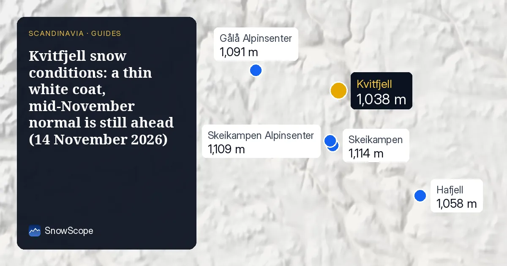
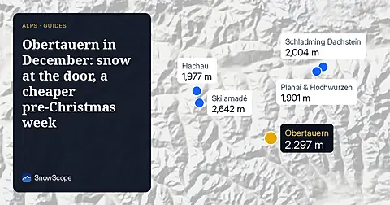

Kvitfjell snow conditions: a thin white coat, mid-November normal is still ahead (14 November 2026)
Kvitfjell, the downhill hill above Gudbrandsdalen, is white but only just. Norway's national snow map estimates about 5 cm on the ground at 1118 m, near the top of the lifts, and about 3 cm down at the valley floor at 184 m. There is no public weather station on the mountain that measures snow depth every day, so these are estimates, not readings. The nearest stations that do measure snow are in the mountains to the west: Venabu, at 930 m and 22 km away, had 5 cm on the morning of 13 November, and Skabu, at 928 m, 14 cm. A usual 14 November in our 46-winter record has 27 cm at the top, so the mountain is behind schedule.
See the live snow forecast for Kvitfjell in the SnowScope appSnow depth, powder alerts and the 3D map, free.

What lies on the slopes today
The snow that is there fell in small doses: our estimate for the last seven days is about 3.5 cm at the top and less than 2 cm at the bottom. That is enough to make the forest look like winter from the E6, but not enough to cover heather and stones on an ungroomed slope.
The national map shows almost the same thin layer from 577 m up to the top. The difference between the bottom and the top is small right now, which is unusual for a hill with 854 m of vertical drop. In a normal year the top is clearly ahead by mid-November.

The coming week: snow up high, rain at the bottom
We expect about 10 cm at the top (1038 m) and 9 cm at mid-mountain (611 m) over the next seven days, and almost nothing at the base. Other forecasts we compare with are a little more generous up high, between 14 and 37 cm, so read our number as the careful one.
Down at the base more than half of the water falls as rain in those forecasts, with the snow line somewhere between 290 and 480 m. In plain words: the upper half of Kvitfjell should get whiter, the bottom stays wet.
What a normal late autumn looks like here
Our 46 past winters give the usual depth at the top as 27 cm on 14 November, 44 cm on 30 November and 54 cm on 15 December. One winter in ten has only 6 cm at the top on 14 November, so a thin start is not rare. At the base the usual 14 November depth is 17 cm, but in one winter out of five there is no snow at all down there on that date.
The first lasting snow arrives at the top around 10 October in a middle winter and at the base around 20 October. The top then stays white for about 218 days. The best weeks for depth come late: in the second half of March the top usually holds about 93 cm.
Is Kvitfjell open?
Not yet. Kvitfjell's own season-start page says the ski area opens on 27 November, two weeks from now. Its snow report page is the place to follow the build-up.
Tips for skiers
- With 5 cm on the ground, ski touring or walking off the prepared slopes means stones under the snow. Wait for a proper base.
- Roads in Gudbrandsdalen will be wet at the bottom and slippery higher up this week: winter tyres are a must.
- Check the resort's own page for lifts and grooming before you drive; it changes quickly at this time of year.
More maps (external sites)
References and credits
- seNorge, Norway's national snow map (NVE and MET Norway), open data under the NLOD licence www.senorge.no/
- Kvitfjell, official site: opening dates and lift status, read 2026-11-13 www.alpinco.com/no/kvitfjell/sesongstart
- Kvitfjell, snow report (official) www.alpinco.com/no/kvitfjell/snorapport
- Varsom, avalanche warnings for Norway www.varsom.no/
- MET Norway, station observations (CC BY 4.0), daily reports as published by Ogimet www.ogimet.com/
About these numbers
Measured snow: morning readings of 13 November 2026 at the official weather stations of Sweden (SMHI open data), Finland (FMI open data, CC BY 4.0) and Norway (MET Norway station reports, CC BY 4.0, as published by Ogimet). Norway's national snow map seNorge (NVE and MET Norway, NLOD) gives the estimates on a 1 km grid for the slopes. Our numbers: SnowScope's forecast for the next seven days at three heights of the ski area, compared with independent forecasts (ECMWF, ICON, GFS, GEM) for 14 to 20 November; snow history of 46 past winters (1980-81 to 2025-26), a model of the past corrected for height. Opening dates: the resorts' own pages, read on 13 November 2026. Run length and lift count: OpenSkiMap mapping.
Official avalanche bulletins: Varsom (NVE)
Cite this report
For research, teaching or the press: the numbers and charts are free to reuse under CC BY 4.0 with this citation.
SnowScope (2026), Kvitfjell snow conditions: a thin white coat, mid-November normal is still ahead (14 November 2026), https://snowscope.app/blog/en/2026/11/kvitfjell-snow-conditions-14-november-2026.html, accessed 2026-11-14
SnowScope (Atlas Labs). (2026, November 14). Kvitfjell snow conditions: a thin white coat, mid-November normal is still ahead (14 November 2026). SnowScope snow reports. https://snowscope.app/blog/en/2026/11/kvitfjell-snow-conditions-14-november-2026.html
BibTeX
@misc{snowscope2026kvitfjellsnowconditions1,
author = {{SnowScope (Atlas Labs)}},
title = {Kvitfjell snow conditions: a thin white coat, mid-November normal is still ahead (14 November 2026)},
year = {2026},
month = nov,
howpublished = {\url{https://snowscope.app/blog/en/2026/11/kvitfjell-snow-conditions-14-november-2026.html}},
note = {Published 2026-11-14 13:09 UTC; accessed 2026-11-14}
}· CC BY 4.0 · Methods, data and tools →
Kvitfjell: snow and temperature by height, this winter vs last (tools) →
Follow Kvitfjell
Free: a message when fresh snow is coming, and the forecast every morning.
More snow reports

Obertauern December skiing: 43 cm on a typical 15 December at mid-mountain, and a 6-day pass of EUR 331 before Christmas. Snow history and prices.
Mt. Baker in December: 46 in (116 cm) of snow at mid-mountain on a typical 15 December, and a $98.80 Monday-to-Thursday ticket sold on the day only.

Montgenèvre has 56 cm of usual December snow at its base, giving weekend drivers deeper early cover than Sestriere across the border.